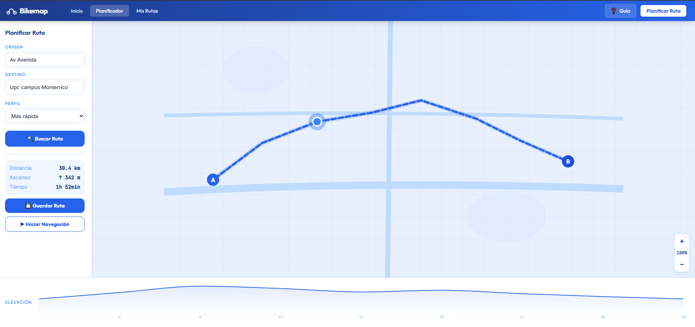

Busca una ruta
Ingresa tu origen y destino para consultar recorridos disponibles y elegir el que mejor se adapte a tu viaje.
Planificar recorridoExplora la ciudad sobre dos ruedas
Ingresa un origen y un destino para consultar rutas en bicicleta. Elige el recorrido que mejor se ajuste a tu viaje y sigue indicaciones paso a paso.
Planificar mi ruta Conocer BikeMapPresentación del proyecto BikeMap; esta página no calcula rutas en tiempo real.


Tu compañera para recorrer la ciudad
BikeMap ayuda a ciclistas a buscar recorridos entre un punto de origen y su destino, y a elegir una ruta adecuada según sus necesidades de viaje.
Consulta rutas, recibe indicaciones paso a paso durante la navegación y guarda tus recorridos favoritos para volver a utilizarlos.
La información clara y accesible te permite concentrarte en el camino, incluso con indicaciones por voz.
Tres funciones para tu recorrido
Ingresa tu origen y destino para consultar recorridos disponibles y elegir el que mejor se adapte a tu viaje.
Planificar recorridoSigue indicaciones durante el trayecto y mantén la atención en el camino.
Ver funcionesConserva las rutas que quieres consultar y utilizar de nuevo.
Conocer BikeMapPlanificación y navegación en bicicleta
Selecciona una función para conocer cómo BikeMap puede acompañarte en cada recorrido.
Esta demostración es informativa: no consulta mapas ni calcula rutas en tiempo real. La función seleccionada no se transfiere al formulario.
Tu recorrido, en tres pasos
Indica un origen y un destino para consultar rutas en bicicleta.
Selecciona el recorrido que mejor se ajuste a tus necesidades de viaje.
Sigue indicaciones paso a paso durante el trayecto hasta llegar a tu destino.
“Planifica el trayecto. Disfruta el camino”.
BikeMap reúne la búsqueda de rutas, la navegación paso a paso y el guardado de recorridos favoritos.
Demostración del formulario
Completa los campos con datos de ejemplo para recorrer la demostración. El prototipo no calcula una ruta ni envía solicitudes.
Este formulario no guarda datos. No ingreses información personal real.